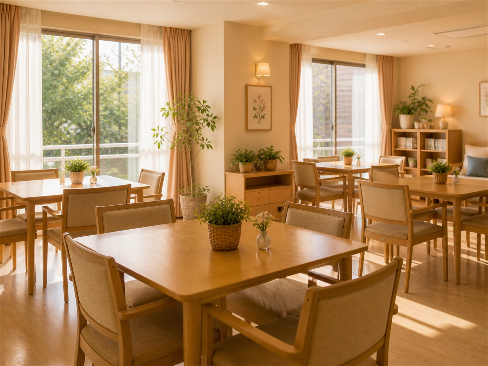

노인요양시설 · 정원 24명
마당이 있는 집에서
천천히 나이 드시게
들녘의집은 논밭 한가운데 있는 작은 요양원입니다. 담이 낮고 마당이 넓어, 언제든 밖에 나가 앉아 계실 수 있습니다.



노인요양시설 · 정원 24명
들녘의집은 논밭 한가운데 있는 작은 요양원입니다. 담이 낮고 마당이 넓어, 언제든 밖에 나가 앉아 계실 수 있습니다.

사계절
방 안에만 계시면 계절을 잊으십니다. 들녘의집은 계절마다 마당에서 할 일을 만듭니다.
상추 · 방울토마토를 어르신 손으로
느티나무 그늘 아래 오후 참
기른 것들을 가족께 보내드려요
실내 화분 돌보기와 뜨개
PROGRAM
작업치료사와 함께 텃밭과 원예 활동을 매일 진행합니다. 무리하지 않고, 하고 싶은 만큼만.
식단
영양사 식단으로 매일 새로 조리하며, 저작 · 연하 상태에 따라 잘게 또는 갈아서 드립니다.
간식 — 찐 고구마와 우유
간식 — 계절 과일
간식 — 텃밭 상추 쌈
간식 — 식혜
면회
10:00 – 17:00 · 사전 연락 주시면 준비해 둡니다
주말에는 마당 평상에서 함께 드셔도 됩니다
일상 사진을 보호자 단톡방으로 보내드려요